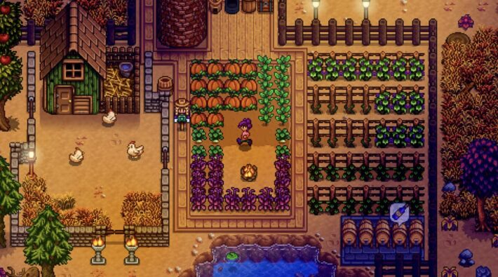
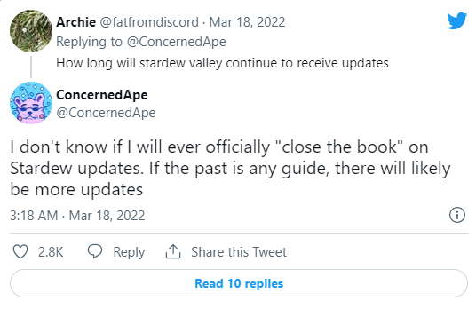
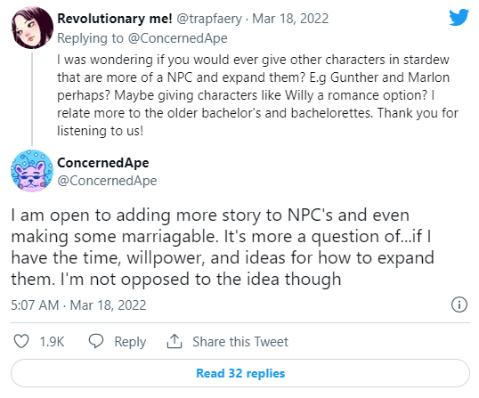

Concerned Ape Discussed Possibility of Stardew Valley 1.6 Update
After Eric “Concerned Ape” Barone announced he’d be self-publishing the Android version of Stardew Valley, he went on to talk about the possibility of a 1.6 update and future game additions. While he began by joking that 1.6 would appear “when 1.5 drops,” he went on to discuss things that could show up in the game and how long he might continue to add to it. He didn’t guarantee anything, but said there is a chance more content could arrive. One of the first things Barone said is that there could be more Stardew Valley updates, perhaps like an eventual 1.6 patch, but noted it wouldn’t be “as big as the 1.5 update was.”

Barone also described one feature that could appear. He said people will be able to move the house and pet area. Currently, in-game they are in an established place when you pick your Stardew Valley farm type. They will always be in the upper right area of the map. Another response also went over the possibility of more Stardew Valley characters becoming romance options.

Barone also mentioned that platonic versions of the 10 and 14 heart events would need to involve entirely new “friend-only” final events. He noted this would involve “a lot of work.” Stardew Valley is available on the Nintendo Switch, PS4, Vita, Xbox One, PC, and mobile devices.
Leave a comment